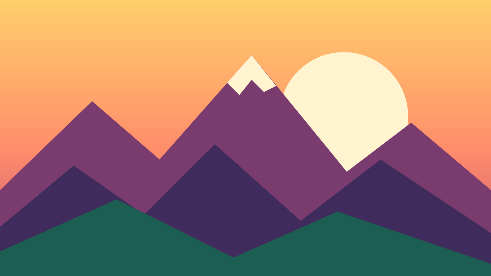
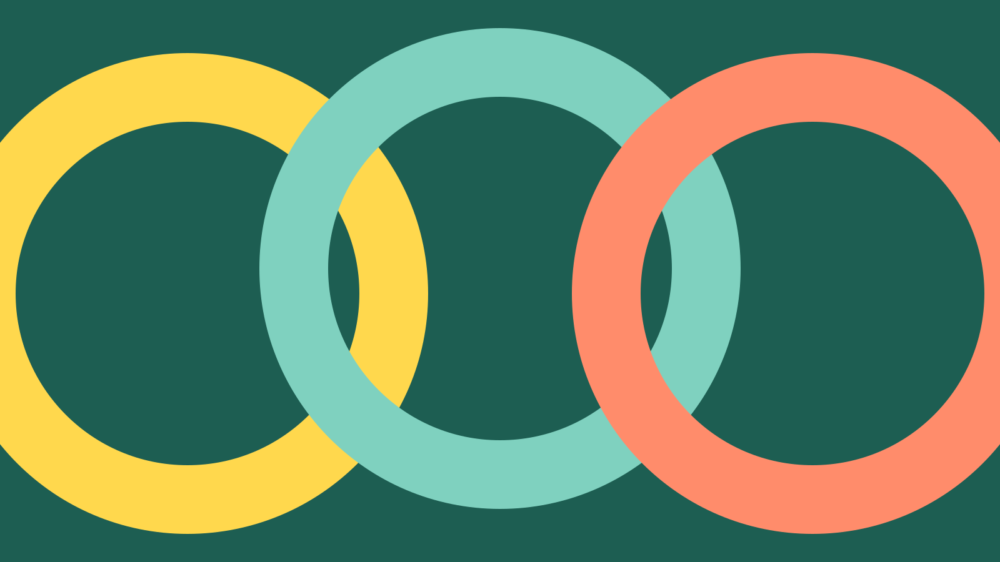

Incoming request
Machine, pls make website
Machine,
Pls make website,
Thanks,
HumanPS no bugs :) ✓ done
Machine: Website made. 6 of 6 requests fulfilled.
Request 1 of 6
all responsive like
One layout, every screen from a 320px phone to a wide monitor. Nothing scrolls sideways, text stays readable, and buttons stay big enough for thumbs.
- Phone One column. Pictures crop taller so they stay big.
- Tablet Cards sit side by side when they fit.
- Desktop Wide pictures, full-bleed, edge to edge.
Request 2 of 6
w/ BIG pictures ooo
Two pictures, each as wide as your whole screen. They are drawn as vector art for this page, so they stay sharp at any size and weigh less than this paragraph.


Request 3 of 6
use my fav fonts
Your fav fonts, as chosen for you. Both are open-source, trimmed to the letters this page uses and served from j8d.org, so no font company sees your visit.
Bricolage Grotesque
JetBrains Mono
Request 5 of 6
load fast pls
The page has a strict weight budget, and the site checks fail if it goes over. Here is what it actually cost to show you this page.
Receipt · this page
- HTML, CSS, JS
- 27.3 KB
- Fav fonts
- 24.9 KB
- BIG pictures
- 1.1 KB
- Total
- 53.3 KB
- Budget
- 150 KB
- Loaded on your device
- …
Prototype: weights are from the files in the repo. In the full build, CI checks these numbers match the real files.
Request 6 of 6
PS no bugs :)
Every change to this site has to pass these checks before it goes live. This is the receipt.
Receipt · site checks
- HTML structure
- ✓ pass
- No outside requests
- ✓ pass
- Weight under budget
- ✓ pass
- Lighthouse, all 4 scores
- target ≥ 95
- Errors on this visit
- 0
Prototype: Lighthouse joins the CI checks in the full build.